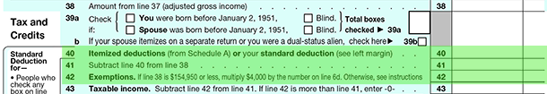

Once adjusted gross income is determined, the next step is to subtract deductions and exemptions to derive taxable income. This is done on the back of Form 1040.
Basic Tax Formula
Gross Income
Less adjustments for Adjusted Gross Income (AGI)
Adjusted Gross Income
Less the greater of:
a) Standard deduction or
b) Total itemized deductions
Less Personal and Dependency Exemption(s)
Taxable Income
Multiplied by personal tax rate
Adjusted for Alternative Minimum Tax (AMT)
Tentative Tax
Less tax credits
Plus other taxes
Equals Income Tax Liability
Below is this section on the back of Form 1040.

As part of calculating taxable income, each taxpayer generally has the option on line 40 of taking the standard deduction or itemizing deductions, using whichever one is greater. The size of the standard deduction will generally be determined by the taxpayer's filing status, but the amount is increased for those age 65 and over and for those who are blind. If the taxpayer chooses to itemize deductions, then the taxpayer will have to fill out and attach additional information.
An individual's filing status is determined on the last day of the tax year. The table below gives a brief description of each available filing status.
| Single |
|
|---|---|
| Married Filing Jointly (MFJ) |
|
| Married Filing Separately (MFS) |
|
| Head of Household |
|
| Surviving Spouse |
|
On the following page, we will define the standard deduction, and then proceed to explore the itemized deductions.